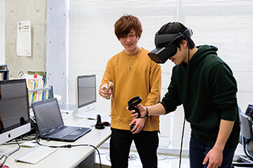

生命ハッキング学とは、生物に関する大量のデータを処理して有用な情報を抽出する学問です。例えば乳がん患者が多い家系を調べ、乳がんの発症率が高くなるDNA配列を特定します。そのような配列を約31億対からなるヒトDNAの中から見つけるためには、情報処理技術が必要です。DNA配列の特徴が分かると、乳がんになりやすい女性を診断し予防することが可能になります。女優のアンジェリーナ・ジョリーさんが乳がんになる危険性が高いとして乳房切除手術を受けたのは、このような解析に基づくものです。当学科では、基礎となるプログラミング技術を習得し、情報学と生物学の両方を学びます。
ゲノム情報から新規の遺伝子やタンパク質を見出し、機能予測などの解析を行う能力を付けます。

生物情報化学研究室
コンピューターシステムやネットワークを設計・開発する能力を付けます。

情報システム研究室
プログラミング、システム、ネットワーク、物理、化学、生物等の広い分野に関心を持っている
将来生命科学 (製薬、医療機器等)及び、情報科学 (データベース開発、情報システム開発等)に関わる業務に従事したい
数学・理科等の基礎的学力を評価します。
＜高等学校等での修得すべき科目＞
数学 数学I・II・III・A・B（あるいは同等の科目）
理科 物理（物理基礎を含む）
化学（化学基礎を含む）
生物（生物基礎を含む）（あるいは同等の科目）のうち１つ以上
英語
学科ページ内の動画をご覧になるにはそれぞれ下記のソフトが必要です。